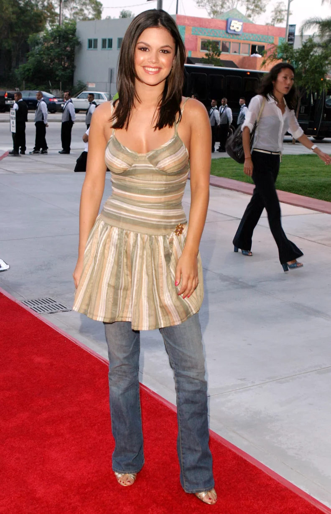

style trend: dresses/skirtsover jeans'

More of an out-there statement trend reemerging is dresses or skirts over jeans. Popular in the late 00's and early 2010's especially in kids shows on nickelodeon and disney.
For good flared or skinny jeans shop from the thrift, or H&M.
Cute mini dresses can be sourced from Zara or stradivarius and skirts from bershka or thrifted.